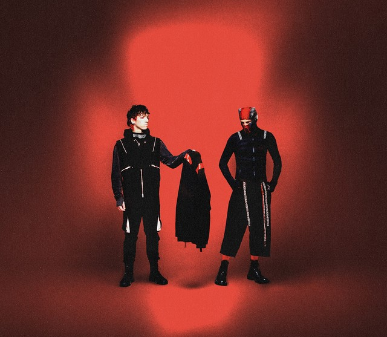
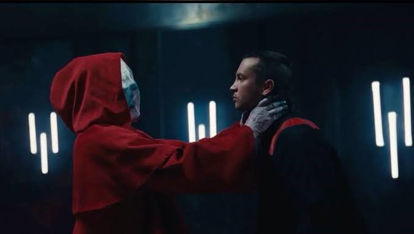
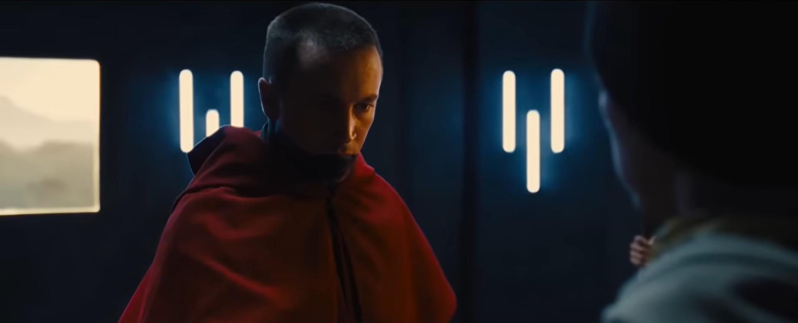

Tema
El final de la historia de DEMA: Clancy frente a Nico en la torre central.
Descripción
Breach es el octavo álbum de la banda y el cierre del lore que comenzó diez años antes con Blurryface.
Clancy se enfrenta a Nico y lo vence, pero toma la decisón de ponerse su túnica de Bishop y se convierte en lo que siempre combatió. Para los Banditos, ese ya no es Clancy. El Torchbearer promete buscarlo y volver a intentarlo.
Esto significa que toda la historia es un ciclo y que Nico también fue alguna vez un Clancy que perdió su lucha.
Galería


